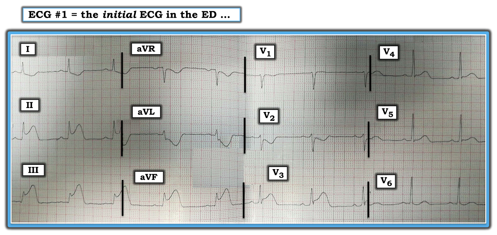
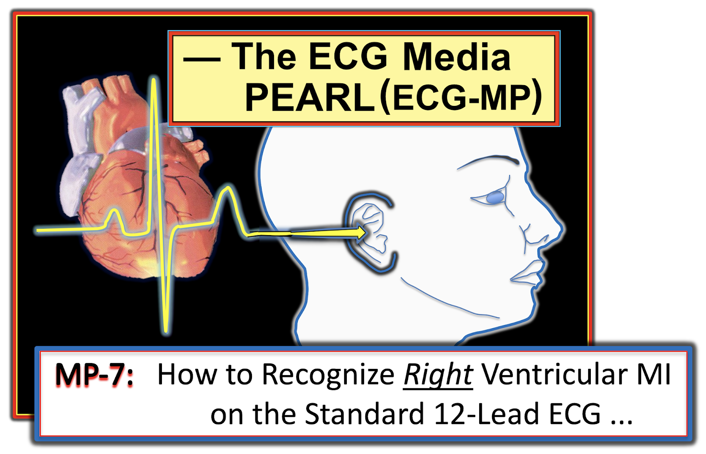
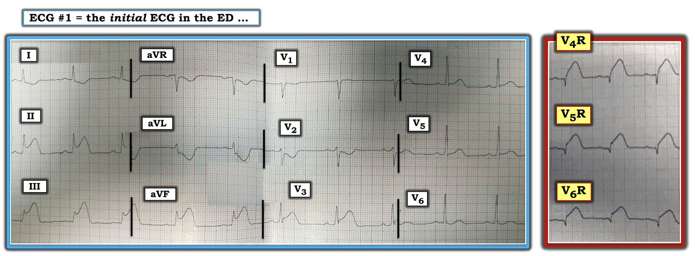
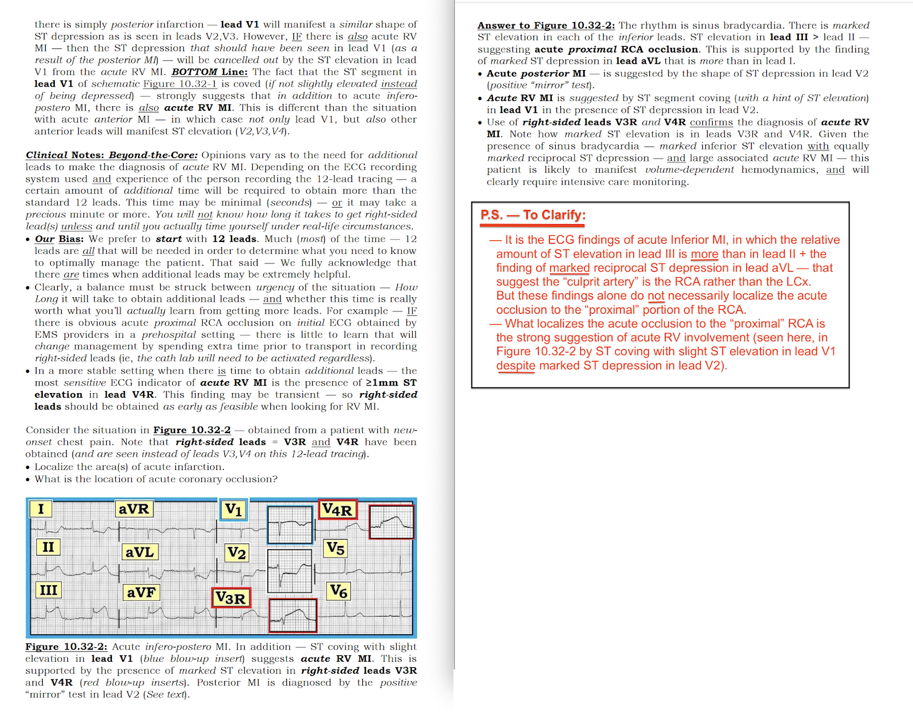

ECG Blog #190 — Động mạch "thủ phạm"? (LCx, RCA, LAD?)
Điện tâm đồ ở Hình-1 được ghi từ một người đàn ông trung niên bị đau ngực mới khởi phát.
- Tắc cấp ở đâu? Đâu là động mạch “thủ phạm”?
- Có cần thêm chuyển đạo để xác định câu trả lời không?
- VÌ SAO việc nhận ra tình huống trong case này lại quan trọng?
- Câu hỏi thêm điểm: Điều gì có thể gây ra ST chênh lên ở chuyển đạo V3?


Suy nghĩ CỦA TÔI về điện tâm đồ #1:
Nhịp xoang, tần số ngay dưới 60/phút. Tất cả các khoảng (PR, QRS, QTc) đều bình thường. Trục mặt phẳng trán bình thường, ở +60 độ. Không có lớn buồng tim.
Về Thay đổi Q-R-S-T:
- Có gợi ý sóng Q nhỏ, “vừa mới bắt đầu hình thành” ở các chuyển đạo III và aVF ...
- Tăng tiến sóng R: Vùng chuyển tiếp (nơi sóng R trở nên cao hơn độ sâu của sóng S) xảy ra bình thường giữa các chuyển đạo V2-đến-V3 — mặc dù sự thay đổi từ phức bộ QRS chủ yếu âm ở chuyển đạo V2 — sang sóng R hoàn toàn dương ở chuyển đạo V3 là đột ngột hơn thường lệ.
- Có ST chênh lên rõ rệt ở mỗi chuyển đạo thành dưới ( = các chuyển đạo II, III và aVF). Cũng có ST chênh lên ở chuyển đạo V3. Sóng T ở mỗi chuyển đạo có ST chênh lên đều là sóng T tối cấp (tức là cao hơn nhiều và “béo” hơn ở đỉnh so với bình thường).
- Đối lập với ST chênh lên ở các chuyển đạo thành dưới — có ST-T chênh xuống rõ rệt dạng “soi gương” (tức là reciprocal) ở chuyển đạo aVL. ST-T chênh xuống ở mức độ ít hơn thấy ở chuyển đạo I.
- Có ST-T chênh xuống đáng kể ở chuyển đạo V2.
=======================================
LƯU Ý: Đến đây, một số bạn đọc có thể muốn nghe ECG Media Pearl dài 6 phút trước khi đọc phần diễn giải cuối cùng của tôi. Bạn có thể xem Nhận định lâm sàng của tôi về điện tâm đồ #1 (nằm ngay bên dưới ECG MP-7) bất cứ lúc nào.
=======================================


ECG Media PEARL #7 (4:50 phút âm thanh) hôm nay — điểm lại các dấu hiệu điện tâm đồ của nhồi máu cơ tim thất phải (RV MI) cấp — cũng như các điểm then chốt khác để xác định động mạch “thủ phạm” có khả năng nhất.
Nhận định lâm sàng CỦA TÔI về điện tâm đồ #1:
Điện tâm đồ #1 cho thấy rõ một STEMI thành dưới cấp — bằng chứng là ST chênh lên rõ rệt ở cả 3 chuyển đạo thành dưới. Dù vậy — phần thú vị của case này nằm ở việc bàn xem những vùng chuyển đạo nào khác của tim bị ảnh hưởng — và — xác định đâu là động mạch “thủ phạm”.
- Như đã bàn ở trên trong ECG Media PEARL #7 — trong số các lý do khiến RCA (Động mạch vành phải – Right Coronary Artery) gần như chắc chắn là động mạch "thủ phạm" gồm: i) Tắc LAD (Động mạch liên thất trước – Left Anterior Descending) ở một LAD "vòng qua mỏm" (wraparound) là khó xảy ra — vì ST chênh lên ở các chuyển đạo trước tim chỉ giới hạn ở chuyển đạo V3; ii) Tắc LCx (Động mạch mũ trái – Left Circumflex) cũng khó xảy ra — vì mức ST chênh lên tương đối ở chuyển đạo III lớn hơn đáng kể so với chuyển đạo II (trong khi tắc LCx thường gây ST chênh lên ở chuyển đạo II nhiều hơn chuyển đạo III — cũng như ST chênh lên ở thành bên); iii) Có ST chênh xuống soi gương rõ ở chuyển đạo aVL (điều này càng ủng hộ tắc RCA — so với tắc LCx, trong đó ST chênh xuống ở chuyển đạo aVL thường ít rõ hơn); iv) Thống kê — do ~85% người có tuần hoàn ưu thế phải, nên xét về thống kê tắc RCA cấp có khả năng xảy ra cao hơn nhiều so với tắc LCx; và, v) Các dấu hiệu trên điện tâm đồ #1 gợi ý mạnh có kèm tổn thương thất phải (RV) cấp — mà nguồn cấp máu chính cho thất phải do RCA đảm nhận (chứ không phải LCx hay LAD).
ĐIỂM THEN CHỐT (PEARL) #1: ST chênh xuống ở chuyển đạo V2 trên điện tâm đồ #1 gợi ý mạnh có kèm nhồi máu cơ tim thành sau cấp. Nhồi máu cơ tim thành sau rất thường gặp cùng với nhồi máu cơ tim thành dưới cấp (do tắc RCA hoặc LCx) — vì thành dưới và thành sau của thất trái thường có chung nguồn cấp máu.
- Nhồi máu cơ tim thành sau cấp thường biểu hiện ST chênh xuống ở ít nhất 2 trong 4 chuyển đạo trước tim đầu tiên. Việc ST-T ở chuyển đạo V1 gần như dẹt mặc dù ST chênh xuống rõ ở chuyển đạo V2 — gợi ý rằng phải có “một yếu tố khác” đang tạo ra ST chênh lên ở chuyển đạo V1, đối kháng với ST chênh xuống lẽ ra phải có do nhồi máu cơ tim thành sau. Trong bối cảnh tắc RCA cấp — chính ST-T dẹt (thay vì chênh xuống) này ở chuyển đạo V1 gợi ý mạnh có kèm tổn thương thất phải cấp.
- ĐIỂM THEN CHỐT (PEARL) #2: Tầm quan trọng của việc nhận ra tổn thương thất phải kèm nhồi máu cơ tim thành dưới liên quan đến huyết động khác biệt của nó (Nitroglycerin không được khuyến cáo vì có thể làm tụt huyết áp quá mức). Thay vì NTG — tình trạng tụt huyết áp phụ thuộc thể tích có thể gặp trong RV MI thường đáp ứng tốt với truyền dịch tĩnh mạch (Huyết động bấp bênh của những bệnh nhân này có thể cần theo dõi sát tại ICU).
- Xem Audio Pearl ở trên — và Hình-3 và -4 bên dưới để biết thêm về RV MI.
Còn ST chênh lên ở chuyển đạo V3 thì sao?
Điều này khiến chúng ta phải giải thích VÌ SAO lại có ST chênh lên đơn độc ở chuyển đạo V3 trong số 6 chuyển đạo trước tim? Câu trả lời không hiển nhiên ngay. Hãy xem xét chẩn đoán phân biệt chính khi thấy ST chênh lên ở cả các chuyển đạo thành dưới lẫn thành trước:
- Có thể là tắc RCA cấp gây nhồi máu cơ tim thành dưới kèm tổn thương thất phải cấp. ST chênh lên trong RV MI cấp nhìn chung thấy rõ nhất ở các chuyển đạo bên phải. ST chênh lên này thường tối đa ở các chuyển đạo V3R và/hoặc V4R — nhưng đôi khi bạn cũng có thể thấy ST chênh lên phần nào ở chuyển đạo V1 (xét cho cùng, V1 là một chuyển đạo bên phải). Thỉnh thoảng, khi RV MI nặng (với thất phải giãn nhiều) — bạn thậm chí có thể thấy ST chênh lên lan rộng trên điện tâm đồ tiêu chuẩn từ chuyển đạo V1 tới chuyển đạo V2 hoặc V3. Có lẽ ST chênh lên mà ta thấy ở chuyển đạo V3 trên điện tâm đồ #1 chỉ đơn giản phản ánh một RV MI nặng, trong đó ST chênh lên ở chuyển đạo V2 đã bị triệt tiêu bởi ST chênh xuống đồng thời do nhồi máu cơ tim thành sau?
- Đặt sai vị trí điện cực của một hoặc nhiều chuyển đạo trước tim có thể góp phần vào vấn đề. Việc chuyển tiếp đột ngột từ phức bộ QRS chủ yếu âm ở chuyển đạo V2 — sang phức bộ QRS hoàn toàn dương ở chuyển đạo V3 gợi ý rằng vị trí của một hoặc nhiều chuyển đạo trước tim có thể bị lệch — và điều đó có thể góp phần tạo nên hình ảnh khó xảy ra mà ta thấy ở đây: đoạn ST dẹt ở chuyển đạo V1 — nhanh chóng chuyển thành ST-T chênh xuống rõ ở chuyển đạo V2 — rồi chỉ sang thêm 1 chuyển đạo nữa đã là ST chênh lên rõ ở chuyển đạo V3. Về mặt sinh lý, tôi không nghĩ sẽ có những thay đổi hình dạng ST-T đột ngột như vậy, trừ khi có đặt sai vị trí của một hoặc nhiều điện cực chuyển đạo trước tim.
- Có thể là tắc cấp một LAD lớn “vòng qua” mặt dưới của thất trái. Tuy nhiên, nếu tắc cấp một LAD “vòng qua mỏm” là nguyên nhân của ST chênh lên ở chuyển đạo V3 — tôi đã chờ đợi sẽ thấy ST chênh lên nhiều hơn ở các chuyển đạo trước tim thành trước khác và không có ST chênh xuống ở chuyển đạo V2. Cuối cùng, khi tắc cấp một LAD “vòng qua mỏm”, mức ST chênh lên tương đối ở các chuyển đạo thành trước nhìn chung lớn hơn đáng kể so với ở các chuyển đạo thành dưới — và đó là điều ngược lại với những gì ta thấy ở đây.
- Có thể là bệnh nhiều nhánh mạch vành. Rất khó dự đoán ảnh hưởng cuối cùng lên điện tâm đồ khi có bệnh nhiều nhánh mạch vành nặng và các kiểu tuần hoàn bàng hệ bù trừ bị thay đổi.
- HOẶC — có thể có một biến thể giải phẫu của RCA, trong đó một nhánh của mạch này chạy ra phía trước nhiều hơn thường lệ để cấp máu cho một phần thành trước thất trái (LV). Khi đó, tắc đoạn gần RCA có thể gây hoại tử một phần khu trú của thành trước, và điều này có thể được phát hiện qua ST chênh lên đơn độc mà ta thấy ở chuyển đạo V3 trên điện tâm đồ #1.
Ở đây có cần các chuyển đạo bên phải để chẩn đoán RV MI cấp không?
Như đã nhấn mạnh ở trên — cách chẩn đoán RV MI cấp chắc chắn nhất là thấy ST chênh lên ở các chuyển đạo bên phải.
- Dù vậy — ở phần trước trong ĐIỂM THEN CHỐT (PEARL) #1 tôi đã mô tả rằng, trong bối cảnh tắc RCA cấp — dấu hiệu ST chênh xuống ở chuyển đạo V2 cùng với đoạn ST dẹt ở chuyển đạo V1 là bằng chứng gợi ý tổn thương thất phải cấp.
- ĐIỂM THEN CHỐT (PEARL) #3: Khẳng định RV MI cấp trong case hôm nay đã có được nhờ ghi các chuyển đạo bên phải (Xem Hình-2, trong đó các chuyển đạo V4R, V5R và V6R nay đã được hiển thị). Mức ST chênh lên rất lớn ở các chuyển đạo bên phải này có lẽ là lớn nhất mà bạn từng thấy (tức là đa số các trường hợp RV MI cấp chỉ cho thấy mức ST chênh lên ở chuyển đạo bên phải khiêm tốn hơn nhiều).


DIỄN TIẾN của case này:
Cơ sở nơi bệnh nhân được khám không có khả năng thông tim ngay. Thay vào đó, bệnh nhân được điều trị kịp thời bằng tiêu sợi huyết với kết quả rất tốt. Trong vòng 1 giờ kể từ khi bắt đầu điều trị — gần như toàn bộ ST chênh lên đã hết, đi kèm cải thiện lâm sàng rõ rệt của bệnh nhân.
- Tôi kết thúc case hôm nay bằng một đoạn trích vài trang từ cuốn ECG-2014-ePub của tôi — trong đó tôi tóm tắt các khía cạnh MẤU CHỐT để nhận biết RV MI cấp (Xem Hình-3 và Hình-4).
CÁC VÍ DỤ khác về RV MI cấp:
- Bàn luận về điện tâm đồ 12 chuyển đạo trong Blog #187 —
- Xem Hình-4 trong ECG Blog #80 (Thêm về động mạch "thủ phạm" trong bài này) —
- Xem ECG Blog #141 —



-------------------------------------------------------------------------
LỜI CẢM ƠN: Xin cảm ơn Hosain Saleh (từ Damascus, Syria) đã chia sẻ case và bản ghi này.
-------------------------------------------------------------------------